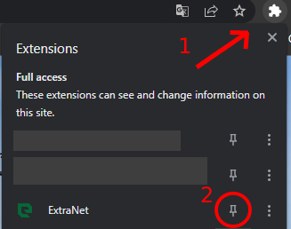
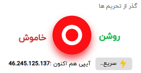
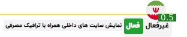
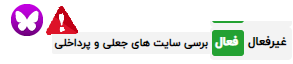

💐 سلام ورود شما رو به Extranet تبریک عرض می کنیم !😊🖐🏼
💁🏻♀️ ما هم اکنون در ورژن یک این نسخه قرار داریم . این صفحه در هر آپدیت به معرفی و توضیح بخش های اضافه و یا حذف شده و همچنین باگ های رفع شده خواهد پرداخت !
قطعاً شما با مشاهده به لیبل های هر قابلیت که اطراف آن به طور واضح ذکر شده به کارایی آن پی خواهید برد
🌟 لطفاً اکستنشن را پین کنید
کنار نوار سرچ مرورگر بر روی پازل کلیک کنید و اکستنشن را پین کنید
🚀 فیلترینگ و تحریم هارا با سرعت نور دور بزنید
👈🏽 با فعال کردن این گزینه از داخل اکستنشن بدون هیچ پیش نیازی به پرسرعت ترین پروکسی وصل شوید
✳️ ترافیک مصرفی هر سایت را مشاهده کنید
👈🏽 با فعال کردن این گزینه از داخل اکستنشن با رفتن به هر سایتی آیکن اکستنشن به مکان سرور آن سایت و ترافیک آن کنار آیکن تغییر خواهد کرد
✳️ امنیت در پرداخت ( صفحات فیشینگ را شناسایی کنید )
👈🏽 با فعال کردن این گزینه از داخل اکستنشن با رفتن به صفحه پرداخت بانک لوگو اکستنشن در بالا تغییر خواهد کرد ! با تغییر به لوگو ( شاپرک ) صفحه پرداخت مورد تایید و اصل است
⚠️ توجه کنید که تمامی پروکسی هایی که در مرورگر فعال هست به صورت اتوماتیک غیر فعال خواهند شد
در ادامه به سوالات شما پاسخ خواهیم داد 🙂👇🏼
⭐️ اکسترانت ( Extranet ) چیست ؟
نام اکسترانت از محدوده های اینترنت گرفته شده است ( عکس ) درحالی که شما در اینترانت به محدوده کمتری دسترسی دارید شما با این اکستنشن به اکسترانت وصل خواهید شد و به پل های ارتباطی به اینترنت وصل خواهید شد ( اطلاعات و تمام درخواست های شما از اخرین استاندارد های رمزنگاری ، رمزگذاری خواهد شد ) ما از این فرایند فقط در زمان قطع اینترنت توسط دولت ایران استفاده خواهیم کرد
🤔 چرا پروکسی های متنوعی قرار نداده اید ؟
اکستنشن Extranet در مراحل ابتدایی ارائه پروکسی هست ! پروکسی هایی که کاملاً اختصاصی هستن همراه با آیپی استاتیک ، رمزنگاری های استانداردی که تاکنون معرفی شده و همچنین متمرکز بر سرعت پس ممکن است این پروکسی ها در مراحل اولیه فیلتر شوند ! ( توجه داشته باشید که ربات های ما مداوم وضعیت ارتباط پروکسی با ایران را برسی می کنند و درصورت فیلتر شدن سریعاً پروکسی را تعویض می کنند ) مورد بعد هزینه سرورها است ! این اکستنشن توسط هیچ ( اسپانسر ، نهاد و ارگانی ) مدیریت نمی شود و کاملاً شخصی و با بودجه شخصی است از آنجا که این اکستنشن تازه وارد این عرصه شده است و مخاطب کمی دارد نمی توان یک مرتبه سرورهای زیادی خریداری کرد قطعاً و حتماً در ورژن بعدی ما لیستی از پروکسی های کشورهای مختلف را ارائه خواهیم داد
😕 شما برای چه کسی کار می کنیدو درآمد شما از کجاست ؟
ما هیچ نهاد یا ارگان یا کسی که فکر میکنید اطلاعات شما را به فروش میگذاریم نیستیم ! این اکستنشن توسط چند دانشجو مهندسی کامپیوتر ساخته شده و بودجه آن توسط پروژه های دیگر درحال تامین است و امیدواریم سال های زیادی را درکنار شما باشیم
😏 چطور به شما اعتماد کنیم ؟
شما آزادید که انتخاب کنید ! ما تمام تلاش خود را خواهیم کرد تا اعتماد شمارو به دست آوریم بنابراین سورس کد اکستنشن Extranet را به صورت عمومی در گیت هاب در اختیار عموم قرار داده ایم تا با مشاهده کدها به جاسوسی نبودن ما پی ببرید
سورس کد :github.com/mohammadfg/Extranet
😈 هدف شما از ساخت این ابزار چیست و چه ویژگی منحصربه فردی دارید ؟
آزادی در اینترنت ! قطعاً شما تاکنون دیده اید که توسط دولت ها ما تحریم های زیادی شده ایم ( هم از ایران و هم از خارج از کشور ) با ما همۀ این تحریم ها را دور بزنید به طوری که هیچ فیلترینگی وجود ندارد حتی در زمان قطع اینترنت ! بله ( حتی در زمان قطع اینترنت در ایران ) سرویس های ما سریعاً فعال خواهند شد . از طرفی دیگر ما ( ایرانی هستیم ) و بهتر از افراد کشوری دیگر محدودیت های خودمان را می دانیم پس به جای اینکه بنشینیم تا آن ها برای ما کاری کنند خودمان دست به کار می شویم ما به شما این قول را می دهیم که سرویس های اکسترانت بدون افت کیفیت همیشه رایگان خواهد بود ! شما بدون نیاز به ( ثبت نام یا دادن هزینه ای ) و کارهای دیگر می توانید از این خدمات استفاده کنید
😤 چرا باید به صورت دستی اکستنشن شما رو بروزرسانی کنم ؟
بزودی اکستنشن ما وب استور قرار خواهد گرفت و دیگر نیازی به اینکه به صورت دستی آپدیت کنید نخواهید داشت ! هیچ برنامه ای بدون باگ نیست و برنامه بدون باگ عادی نیست ! بی شک انتشار در وب استور حجم زیادی از مخاطب را وارد می کند که ممکن است تجربه ناخوشایندی را تجربه کنند و هیچکس دوست ندارد کاربش را از دست بدهد بنابراین ما قدم به قدم پیش خواهیم رفت تا همگی تجربه خوبی را با ما داشته باشند
💬 چطور می توانیم با شما در ارتباط باشیم ؟
درحال حاضر فقط می توانید از طریق تلگرام با مدیر و سرپست این پروژه تماس بگیرید : T.me/Mohamaadfg
🔄 چگونه آپدیت های بعدی رو نصب کنم ؟
1- هنگامی که به ( اینترنت ) وصل بودید به این آدرس بروید : github.com/mohammadfg/Extranet
2- فایل .zip را دانلود کنید و آن را در مکان مناسبی استخراج کنید
3- داخل مرورگر خود به بخش تنظیمات ( settings ) بروید و از نوار کناری گزینه اکستنشن ( extension ) را کلیک کنید
4- در نوار بالا صفحه گزینه حالت توسعه ( Developer mode ) را کلیک کنید تا روشن شود و سپس گزینه بارگذاری بسته ( Load unpack ) را انتخاب کنید
5- به مکانی که .zip را استخراج کردید بروید و پوشه ای که استخراج شده است را انتخاب کنید و سپس بر روی ok کلیک نمایید
— مراحل زیر (اختیاری) است👇🏽
- برای بستن ارورهای احتمالی در همان پنجره اکستنشن ها بر روی گزینه توضحیات (details) مربوط به اکستنشن کلیک کنید و گزینه جمع آوری خطاها (collect errors) را خاموش کنید
📌 در زمان های قطعی (اینترنت) در صورت وجود آپدیت لینک های آپدیت داخل اکستنشن به شما اطلاع رسانی خواهد شد
📌برای دیدن آموزش های ویدیویی و تصویری وارد لینک در گام نخست شوید